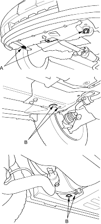

If the vehicle needs to be towed, call a professional towing service. Never tow the vehicle behind another vehicle with just a rope or chain. It is very dangerous.
Emergency Towing
There are 3 popular methods of towing a vehicle.
Flat-bed Equipment - The operator loads the vehicle on the back of a truck. This is the best way of transporting the vehicle.
To accommodate flat-bed equipment, the vehicle is equipped with a towing hook (A) and tie down hook hooking slots (B).
The towing hook can be used with a winch to pull the vehicle onto the truck and the tie down hook hooking slots can be used to secure the vehicle to the truck.

Wheel Lift Equipment - The tow truck uses 2 pivoting arms that go under the tyres (front or rear) and lift them off the ground. The other 2 wheels remain on the ground.
Sling-type Equipment - The tow truck uses metal cables with hooks on the ends. These hooks go around parts of the frame or suspension and the cables lift that end of the vehicle off the ground. The vehicle's suspension and body can be seriously damaged if this method of towing is attempted.
If the vehicle cannot be transported by flat-bed, it should be towed with the front wheels off the ground. If due to damage, the vehicle must be towed with the front wheels on the ground, do the following:
- Release the parking brake.
- Start the engine.
- Shift to
 position, then
position, then  position.
position. - Turn off the engine.
It is best to tow the vehicle no farther than 50 miles (80 km), and keep the speed below 35 mph (55 km/h).

- Improper towing preparation will damage the transmission. Follow the above procedure exactly. If you cannot shift the transmission or start the engine (automatic transmission), the vehicle must be transported on a flat-bed.
- Trying to lift or tow the vehicle by the bumpers will cause serious damage. The bumpers are not designed to support the vehicle's weight.